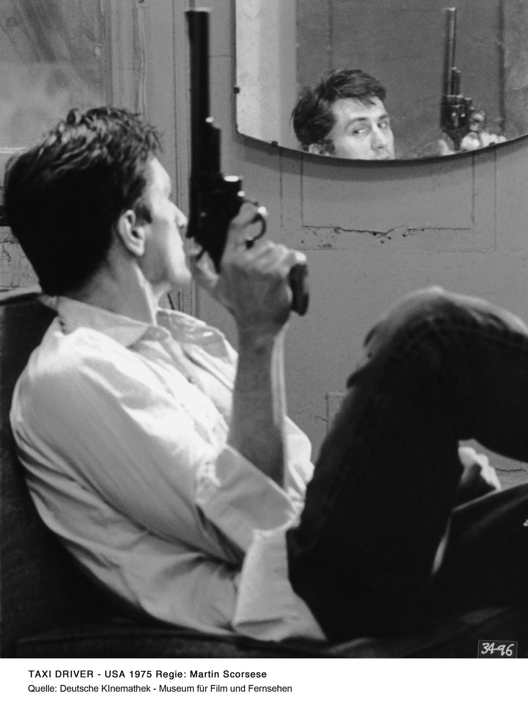
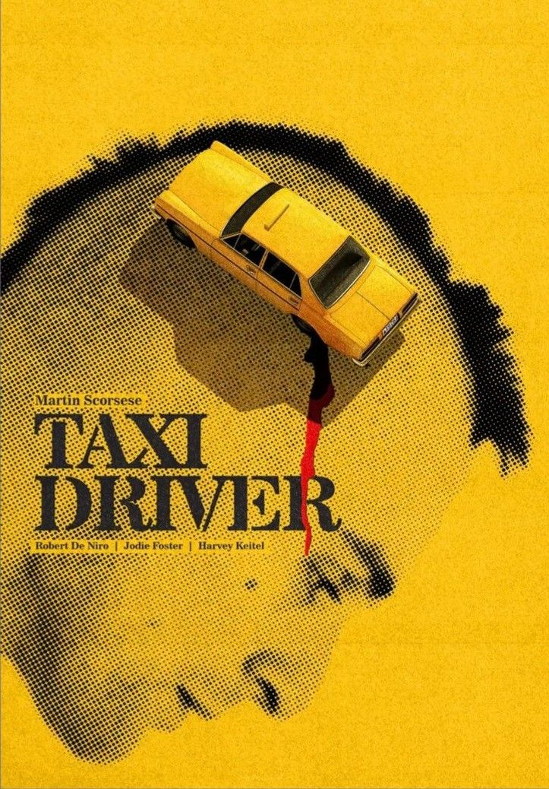
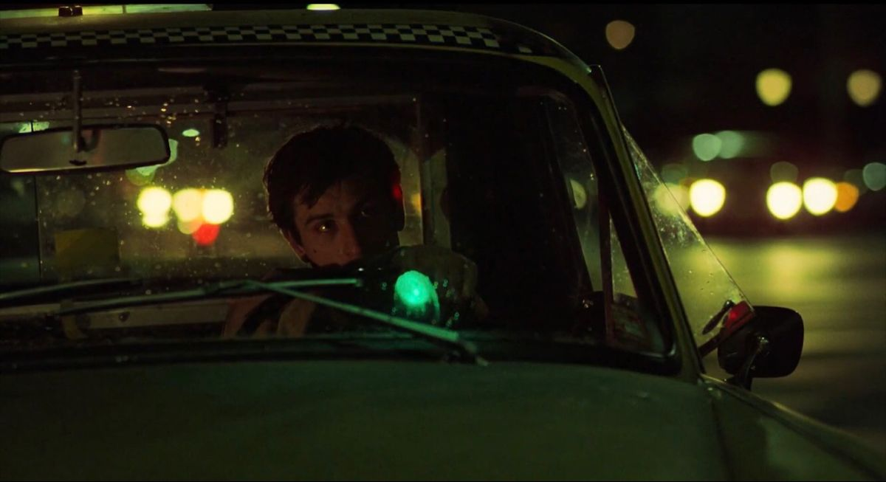
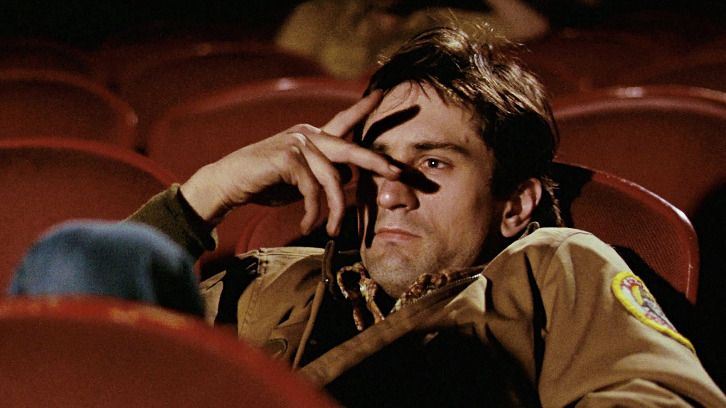
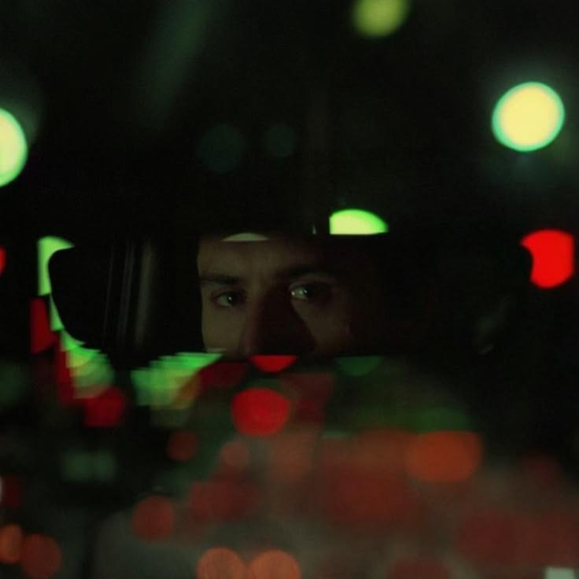
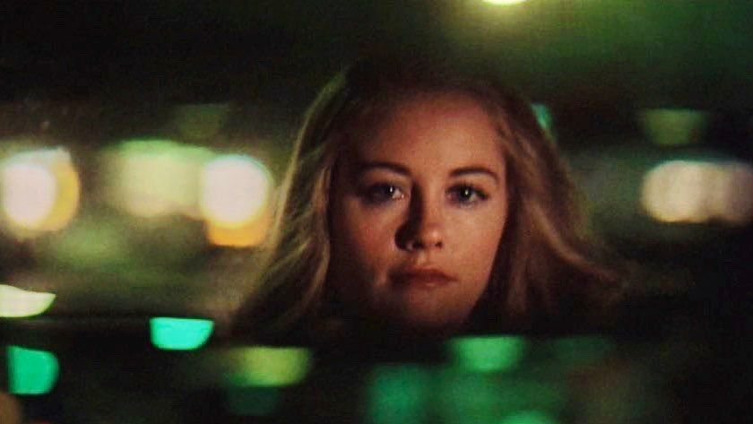
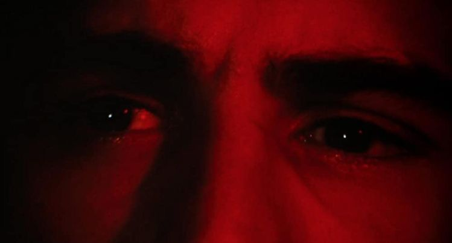
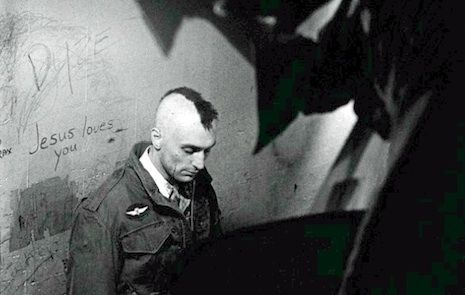

“You talkin’ to me?” La escena frente al espejo fue parcialmente improvisada.

El taxi amarillo funciona como símbolo del aislamiento de Travis.

La lluvia constante representa la decadencia moral de Nueva York.

Travis lleva a Betsy a un cine porno porque perdió contacto con la realidad social.

Las luces neón reflejan la visión fragmentada y paranoica de Travis.

Iris representa la inocencia atrapada dentro del caos urbano.

Los close-ups a los ojos de Travis muestran su descenso psicológico.

El final ambiguo hace dudar si Travis realmente sobrevivió.